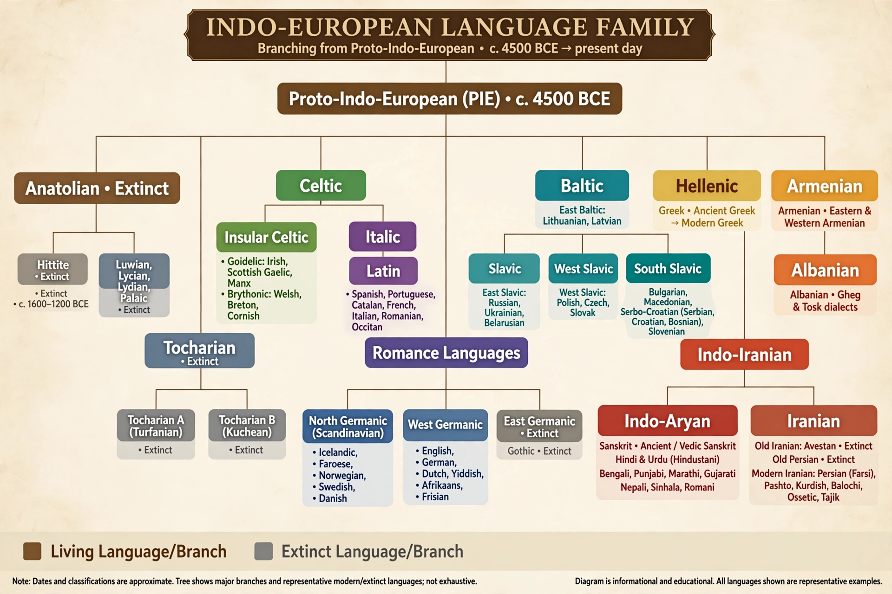

Indo-European languages

Proto-language: Proto-Indo-European
Urheimat: Pontic-Caspian steppe (Kurgan hypothesis), c. 4500–2500 BCE
Branches: Indo-Iranian, Hellenic, Italic, Celtic, Germanic, Balto-Slavic, Armenian, Albanian, Anatolian (extinct), Tocharian (extinct)
Speakers: c. 3.5 billion (about 46% of humanity)
The Indo-European languages are a language family of several hundred related languages and dialects, spoken natively by about 3.5 billion people — more than any other family. They include English, Spanish, Hindi, Russian, French, German, Persian, and the classical languages Sanskrit, Ancient Greek and Latin.
Origins and expansion
The mainstream Kurgan hypothesis places the Proto-Indo-European homeland on the Pontic-Caspian steppe north of the Black and Caspian seas, where a pastoralist culture spread after c. 4000 BCE with wheeled wagons and horse domestication. Rival Anatolian hypotheses propose a farming expansion from Anatolia several millennia earlier. Ancient DNA research since 2015 has confirmed a major migration of steppe ancestry into Europe in the third millennium BCE, strongly supporting the steppe model for most branches.
Discovery
The family's existence was famously proposed by Sir William Jones in 1786, noting that Sanskrit bore to Greek and Latin "a stronger affinity... than could possibly have been produced by accident." Nineteenth-century scholars such as Franz Bopp, Jacob Grimm and August Schleicher built comparative grammar on this insight, and Ferdinand de Saussure's laryngeal theory (1879) was spectacularly confirmed when Hittite was deciphered in the 20th century.